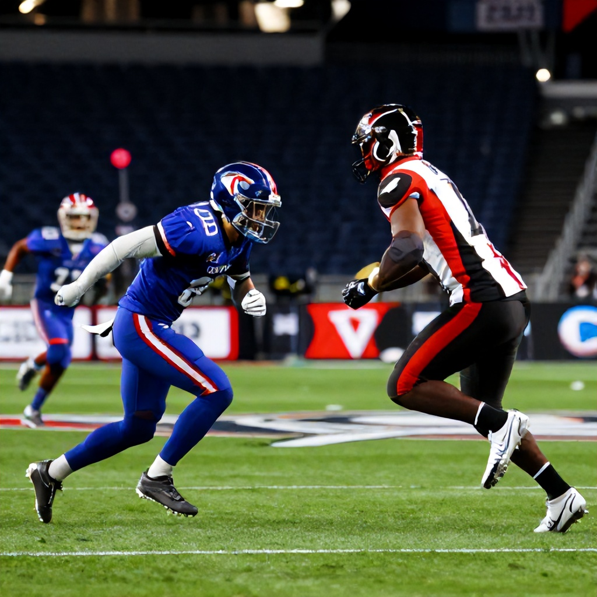

The Toronto Argonauts and Montreal Alouettes face off in what promises to be a thrilling CFL showdown on Friday, June 13th at 1 AM ET. With both teams vying for playoff positioning, this matchup could be a pivotal moment in their respective seasons.
The Head-to-Head Storyline
The Argonauts come into this game riding a wave of momentum after a strong showing in recent weeks. Meanwhile, the Alouettes are looking to maintain their competitive edge in the East Division. Both teams have shown resilience on defense and have been effective in the red zone, making this a game where small margins could make all the difference.
Key Matchup Analysis
Montreal enters with a slight edge in terms of offensive firepower, thanks to their high-powered passing attack and a solid running game. However, Toronto's defense has been a standout, particularly in limiting opponent scoring opportunities. Their ability to pressure the quarterback and force turnovers will be critical in this game.
Betting Insights
According to Sports Select, the Montreal Alouettes are listed as the favorites with a moneyline of -213, while the Toronto Argonauts are priced at +290. This suggests that bookmakers see Montreal as the stronger team overall. However, the spread is even at -125 for Montreal and -125 for Toronto, indicating a tight contest expected.
The Over/Under for this game is set at 51.5 points, suggesting a high-scoring affair. Both teams have demonstrated the ability to score consistently, especially when they're in rhythm offensively.
Strategic Edge
Toronto’s strategy should focus on controlling the tempo and minimizing mistakes. Their offense needs to stay efficient, particularly in short-yardage situations where they've struggled recently. Montreal, on the other hand, must capitalize on their opportunities, especially in the red zone, where they’ve been inconsistent.
Final Verdict
While Montreal is favored on paper, the evenly matched spread indicates that this game is likely to go to the wire. For those seeking value, the Toronto Argonauts at +290 offer an attractive payout if you believe they can pull off an upset. The game is expected to be high-scoring, so betting on the Over at 51.5 points is also a viable option.
This matchup will showcase the best of the CFL – fast-paced action, strategic depth, and high-stakes competition. Fans should prepare for a game filled with drama, as both teams are determined to secure a crucial win.